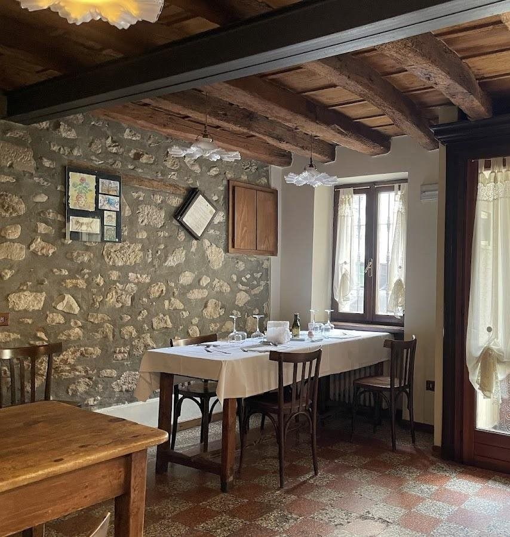
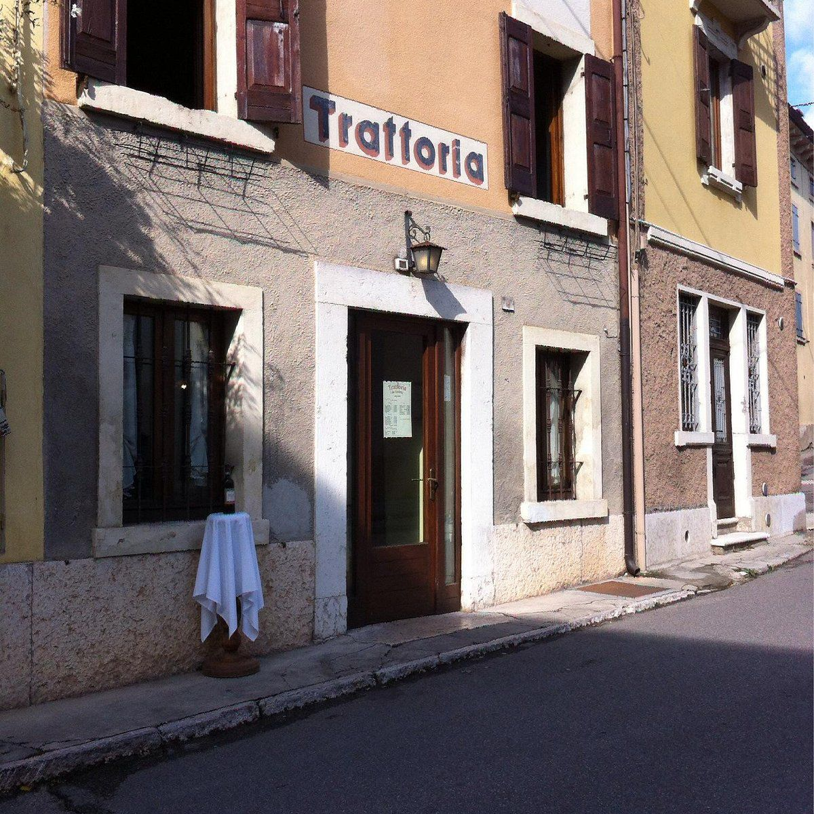
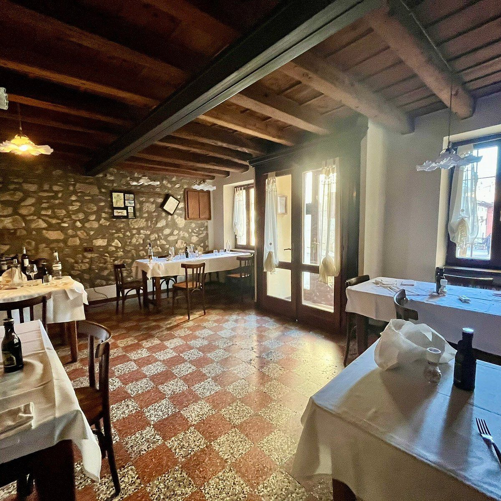

Trattoria · Negrar di Valpolicella
Da Andrea
Tradizione, territorio e convivialità.
Scopri il menùScorri
La nostra cucina
Il sapore della tradizione.
Una cucina sincera, legata al territorio e alle ricette che fanno parte della nostra storia.


Il locale
Un posto dove stare bene.
Un ambiente raccolto e accogliente, dove il legno, la pietra e la tavola raccontano l'anima della trattoria.

La nostra storia
Una storia da continuare.
Trattoria da Andrea nasce dal desiderio di portare avanti una tradizione fatta di cucina, territorio e persone.
Un luogo semplice, dove sedersi a tavola e sentirsi a casa.
Dove trovarci
Nel cuore della Valpolicella.
Piazza Roma 4
Negrar di Valpolicella · Verona
Orari
Chiuso il giovedì tutto il giorno
e la domenica sera.